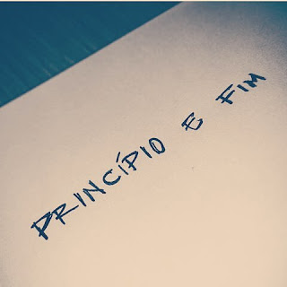
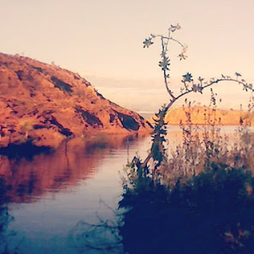
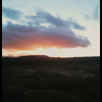
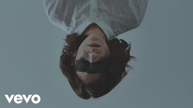
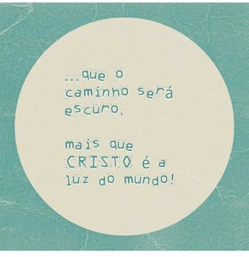
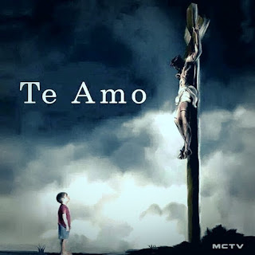

Não há religião, não há teorias que definam com exatidão, oque Jesus sofreu. Deixou tudo, para que um dia nos tenhamos tudo. Cada passo seu na terra representava a salvação, e a salvação não está apenas no ato do calvário, mas em todo o trajeto que ele caminhou. Só vamos entender por completo sobre o sacrifício que ele fez, quando tivermos a oportunidade de perguntar face a face, mas enquanto esse momento não chega, que sejamos gratos por tudo, e que todos os dias possamos pedir perdão por tudo de errado que fazemos. Sejamos Gratos, é o mínimo que podemos fazer...
Princípio e fim
A vida é uma constante luta em busca daquilo que mais se almeja, e principalmente daquilo em que sentimos falta que é andar com Deus Pai, Filho e Espírito santo. É lutar por um principio que se perdeu e um fim que está apenas começando. Onde enfim nos ligaremos com aquele que é o Principio e Fim.
Dna do Criador
Na jornada da vida, passamos por lugares que nos trazem paz, que nos faz compreender quem realmente somos, e o real motivo de estarmos aqui. Lugares que expressam a simplicidade do maior arquiteto já existente, de um Deus que é simples, que expressa seu amor através da sua Criação, para que possamos ter a certeza que um dia tudo vai passar e que poderemos dar um abraço e agradecer por não ter desacreditado na gente, quando nós mesmos deixamos de acreditar em nós. Ele nos faz acreditar que em nós existe algo maravilhoso, existe o DNA de um Criador que por nós entregou sua própria vida...
Natureza
 A natureza, é a forma que Deus nos mostra de que apesar das lutas muitas das vezes não serem vencidas, há ainda esperança de dias melhores, assim como o sol põe se diariamente, assim são as nossas chances de vencer.
Liberdade
Quem de nós detém a verdade? mas o que é verdade, senão conceitos entupidos modificados por muitos. Eu sou um olhar, no mundo temos vários olhares , várias janelas que enxergam a vida de maneiras diferentes; vivemos em caixas que muitas vezes nem sabemos como entramos. A religião nos aprisiona ; quando falo de religião falo de estar presos a doutrinas que muitas delas não tem nada haver com Deus, ele está pouco se importando se não posso ir ver um show de lagum por exemplo. seja qual for seu pensamento de Deus , seja Jesus Seja Buda ou quem seja , Creia na mais pura linguagem a linguagem da liberdade , linguagem essa que não deve nada a ninguém nem a pastor nem a líder afinal quem é pastor quem é líder? se no final diante de Deus temos o mesmo valor e o mesmo amor. Não permita ser intoxicado pelos olhares dos outros , afinal o olhar é do outro não seu. Seja livre Seja você , se você se sente bem em uma religião, Ótimo!, se não, voe se descubra , Deus está além das paredes; se elas lhe satisfazem que bom, mas nunca deixe de ver Deus na Criança, no bom dia sincero de alguém que ame você, num pôr do Sol que trás a esperança de que haverá um novo dia para que possa fazer tudo diferente e possa amar mais e julgar menos, no abraço de mãe de filho, Sabe Deus pra mim é amor é Jesus , esse é meu Deus, quero servi-lo da forma mais natural possível sem caixas apertadas que não cabem amor diversidade e opiniões diferentes , eu o amo tanto que quero voar para encontrá-lo, e então poder vê-lo na mas linda forma, o meu olhar que é só meu e dele.
Luz do Mundo
Escuridão, é assim que muitos de nós estamos vivendo, enquanto uns vivem numa luz plena, outros vivem nessa escuridão que aos poucos vai matando e destruindo sonhos, projetos, e o pior a nossa alegria de viver.Sei que cada um tem que lidar com a sua escuridão, todos temos nossas culpas, medos e por aí vai, o escuro de cada um é diferente do escuro do próximo, Jesus prometeu ser a luz do mundo, mas como vencer essa escuridão através da luz de Jesus? muitos têm se perguntado como isso pode ser possível, essa é a pergunta mais feita entre aqueles que acreditam em Cristo. Estávamos em plena paz, na plena luz, quando a escuridão se aproximou de nós, e por incrível que pareça, preferimos trocar a luz pelas trevas, isso custou caro, mas muito caro mesmo de uma forma que a única coisa que poderia deter essa escuridão era a fonte da luz ou seja Jesus , mas se Jesus morreu como sabemos porque ainda muitos de nós por mais que tenham aceitado Jesus e se batizado ou de qualquer forma, ainda vivemos entre a luz e a escuridão? Sabe, fico pensando muitas das vezes e refletindo sobre isso, mas dai começo a entender que a morte de Jesus, só será compreendida quando isso tudo passar, vamos entender quando a fonte vier em pessoa dai então vamos compreender, Nunca julgue ninguém, quando nós vermos alguém triste, ou com medo de algo tão simples, não julgue você não sabe oque aquela pessoa enfrenta, quais são as suas lutas diárias. Aquele que é luz, é eterno, então se somos filhos do eterno, logo somos eternos, essa eternidade não depende de eu ser bonzinho, mas unicamente das nossas escolhas que fazemos diariamente, daí entendo que para que possamos ver a luz face a face primeiro temos que lutar no escuro muita das vezes sem entender nada mas temos que lutar, porque para vencer a escuridão, somente com lutas porque Jesus lutou primeiro contra ela, cabe a cada um de nós lutarmos também.
Humildade
Aquele que se fez pequeno, quando todos queriam ser grandes. Aquele que habitava no trono desceu até aqui por nós, preferiu deixar tudo, para que um dia nós tenhamos tudo, não suportou a separação que havia entre a gente então resolveu colocar em perigo sua própria divindade. Ele também era humano, poderia ter caído, mas por nós não caiu preferiu ser humilhado, porque para ele oque mais importava era a nossa salvação. Sofreu, chorou e sentiu dor, mas ele sabia que aquilo tudo era preciso. E caminhou até o final porque a única coisa que importava era um dia olhar nos olhos de cada filho seu e dizer: filho Eu te Amo...